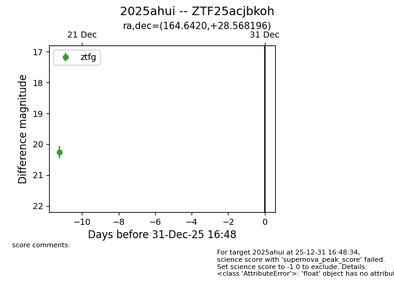
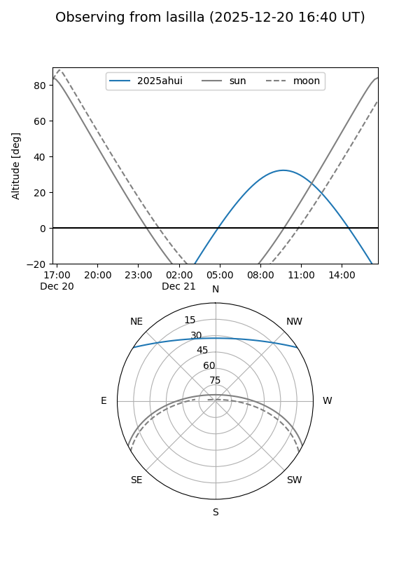
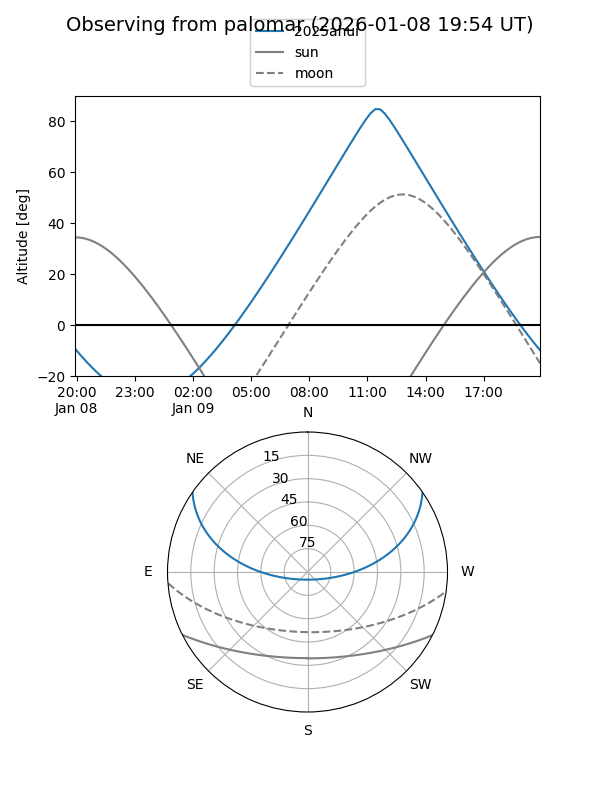

2025ahui
Target 2025ahui at 2025-12-31 18:00
Aliases and brokers:
FINK: link
Lasair: link
ALeRCE: link
TNS: link
YSE: link
alt names
ZTF25acjbkoh (ztf,fink_ztf)
2025ahui (tns,yse)
Coordinates:
equatorial (ra, dec) = 164.6420,+28.56820
equatorial (HMS+DMS) = 10:58:34.09,+28:34:05.51
galactic (l, b) = (202.9988,+65.06613)
Flags:
Photometry:
last ztfg=20.26
1 ztfg detections
Lightcurve

Visibility


Additional plots